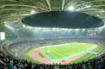
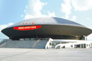
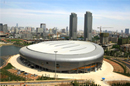
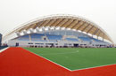

您当前的位置 ： 第十三届全运会 >> 全运公告
第十三届全运会9月7日官方新闻素材下载
稿源： 十三运官网 作者： 编辑： 刘达 2017-09-08 12:07
为方便第十三届全运会注册记者使用全运会官方新闻团队及官方摄影团队提供的新闻素材及图片，全运会期间官网将开设共享空间，建立全运会图文收发平台，将官方新闻团队和官方摄影团队提供的新闻素材及图片上传至共享空间，供注册记者下载。
全运会进行期间，官网随时将素材下载地址发布在首页首屏的重要位置，每日最新的素材下载密码将张贴于主新闻中心记者工作区。过往日期素材的下载密码，可通过志愿者查询。
9月7日官方新闻素材下载链接：http://pan.baidu.com/s/1c15h9Wc
全运场地
足 球
篮 球
排 球
乒乓球
羽毛球
网 球
游 泳
射 击
田 径
举 重
柔 道
武 术
更多......
全运场地
-

奥体中心体育馆
-

天津体育馆
-

奥体中心游泳跳水馆
-

体育中心曲棍球场
更多>>>
全运回忆
-
第十二届全运会奖牌榜：山东蝉联
中华人民共和国第十二届运动会于2013年8月31日至2013年9月12日在辽宁沈阳市举行……[详细] -
第十一届全运会奖牌榜：山东夺魁
十一届全运会会徽以“和谐中华、活力山东”命名，以8个“竞技人形”为主要元素……[详细] -
第十届全运会奖牌榜：江苏首次登顶
第十届全运会于2005年在南京举行，会徽图案由数字“10”变化而来……[详细]
更多>>>
本网站由中华人民共和国第十三届全运会组织委员会主办 北方网承办 津ICP备08001569号-3